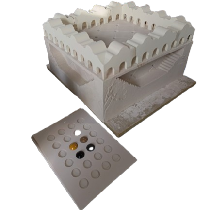
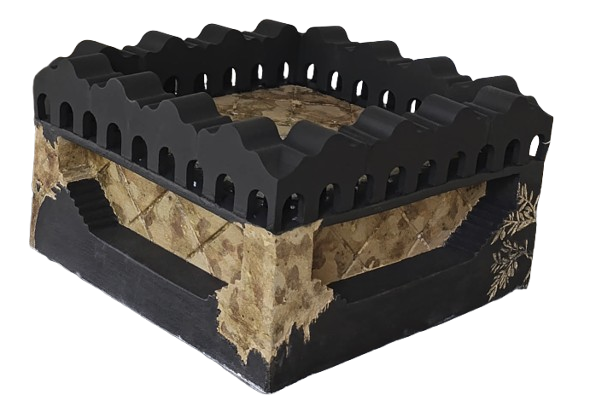

Mediterranean Mission Memories
Hood Design Studio
California’s early colonial heritage manifest a built system of Spanish Missions that extended from San Diego to San Francisco. These settlements featured cloistered gardens that introduced Mediterranean plants such as grapes, figs, citrus, pomegranate and olives. Today, the Spanish mission structures remind us of the complicated colonial legacy of conquest and conversion, while the flora reminds us of our connectedness. As in many Mediterranean geographies and climate, the Olive tree is the witness between the past and the future. Our Jardin de Salon is a homage to this distinction and memory.
Making of Mediterranean Mission Memories





Alma Du Solier, studio director and principal at Hood Design Studio, seamlessly blends environmental planning with landscape design. Alma began her journey with a Bachelor in Architecture from ITESM Campus Monterrey, Mexico, then further honed her skills in landscape architecture under Walter at UC Berkeley.
Excited by cities’ social dynamics and the narratives woven within open spaces, Michael embraces evolving landscapes over time, harnessing social interaction to enrich urban environments. With a diverse international background, he’s deeply committed to seamlessly integrating global cultures in the public realm.
Sarita Schreiber joined Hood Design Studio in October 2019. She holds a BA
from University of California Los Angeles in Fine Arts, where she graduated as the commencement speaker. Prior to Hood Design Studio, she worked as a fabricator and sculpture / architecture conservation technician.
Information placeholder.